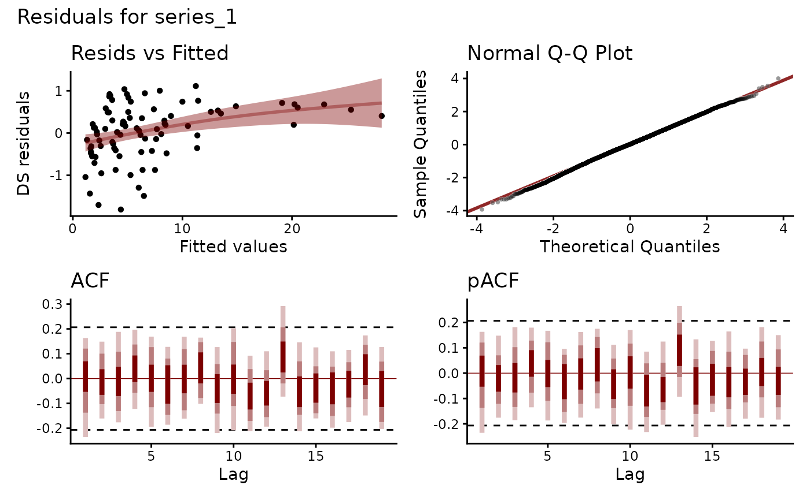
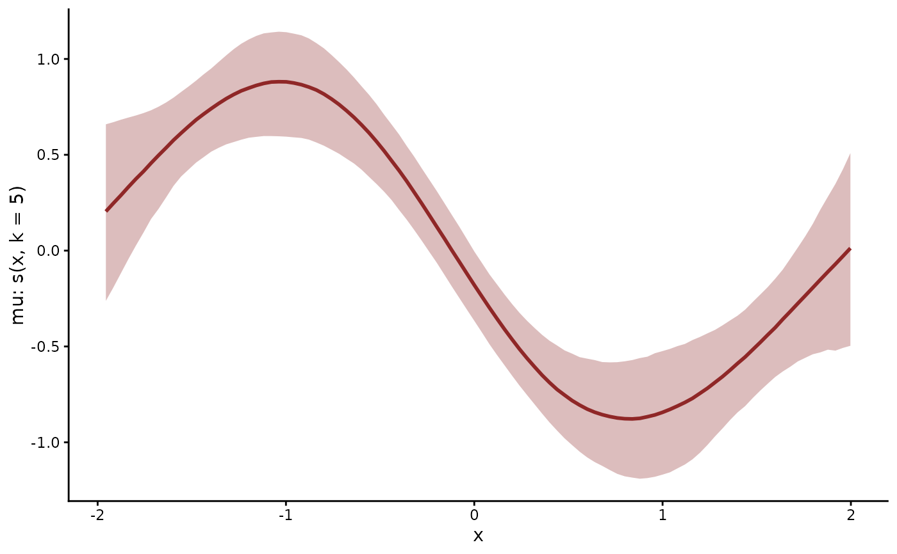
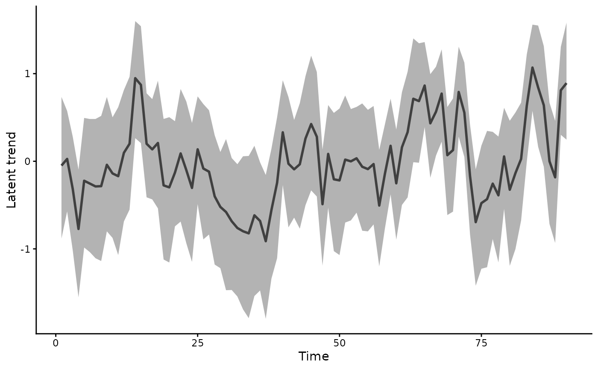
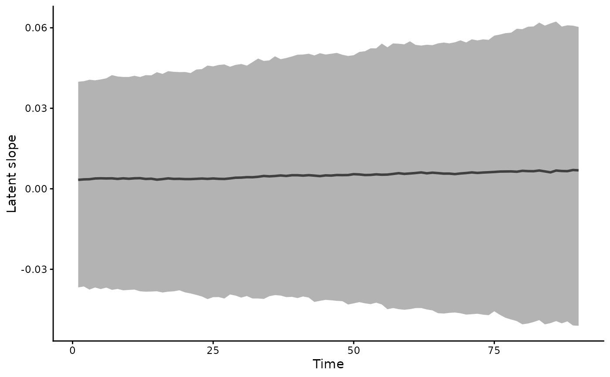

Draws one of the standard views of a fitted model, chosen by type.
Arguments
- x
A fitted
mvgamobject.- type
The plot to draw:
"residuals"(default)Randomised quantile (Dunn-Smyth) residuals of one series, defined in
residuals.mvgam(). The grid plots them against the fitted values, with their Q-Q plot, ACF and partial ACF, aspp_check.mvgam()draws them. For a model that fits, they look like independent standard normal draws. A series observed at unevenly spaced times shows a semivariogram in place of the ACF and partial ACF. Anocc()ornmix()fit has one residual per closure unit and draws the Q-Q plot alone."smooths"The posterior of each smooth, from
conditional_smooths.mvgam(), with several smooths combined into one figure."trend"The latent trend over the training times, from
hindcast.mvgam(), or the state componentcomponentnames. Ajsdgam()fit has sites in place of times and refuses it."factors"The path of each latent factor.
active_factors()reports the variance each factor carries."series"The observed data the fit carries.
mvgam_data()plots data before a fit."latent_state"The latent state of an
occ()ornmix()fit drawn from the covariates alone: occupancypsior abundanceN, by series and time. A multi-season fit pools the sites of each time.
- series
A series index or name.
"trend"and"series"also take"all", their default."residuals"draws one series, the first by default."smooths","factors"and"latent_state"ignore it.- resp
Character specifying which response variable for multivariate models. NULL (default) returns predictions for all responses.
- ndraws
The number of posterior draws, or
NULLfor every draw."residuals"takes 100 by default."factors"and"series"ignore it.- component
NULL(the default) for the summed trend, or the names of state components of the trend, withtype = "trend". Several names give the sum of their components.LLT()has"level", the stochastic level, and"slope", its growth per time step. A seasonalLLT()adds"season"."predictor"holds the effects of the trend formula's covariates.c("level", "predictor")gives the level with those effects. A factor model projects each component through its loadings, as it projects the trend.- ...
Further arguments to the function that draws the plot, such as
smoothsforconditional_smooths.mvgam().
See also
forecast.mvgam() and its plot() method draw forecasts.
conditional_effects.mvgam() draws covariate effects.
mcmc_plot.mvgam() draws posterior diagnostics.
Other model checking:
mvgam_diagnostics,
pp_check.mvgam(),
residuals.mvgam()
Examples
# \dontrun{
set.seed(13)
simdat <- sim_mvgam(family = poisson(), n_series = 1L,
n_timepoints = 120L, trend_model = AR())
mod <- mvgam(y ~ s(x, k = 5), trend_formula = ~ AR(p = 1),
data = simdat$data_train,
family = poisson(),
chains = 2, silent = 2)
#> Warning: 5 of 2000 (0.0%) transitions ended with a divergence.
#> See https://mc-stan.org/misc/warnings for details.
# Residual diagnostics, the default
plot(mod)

# The smooth of x and the latent AR(1) trend
plot(mod, type = "smooths")

plot(mod, type = "trend")

# The slope of a local linear trend
mod_llt <- update(mod, trend_formula = ~ LLT())
#> Warning: 7 of 2000 (0.0%) transitions ended with a divergence.
#> See https://mc-stan.org/misc/warnings for details.
plot(mod_llt, type = "trend", component = "slope")

# Next, plot(forecast(mod, newdata = simdat$data_test)) carries the
# trend forward
# }